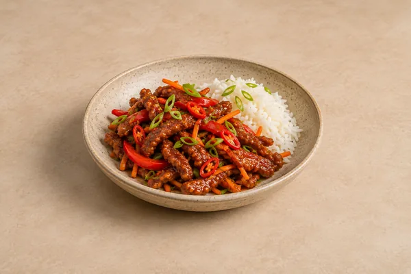
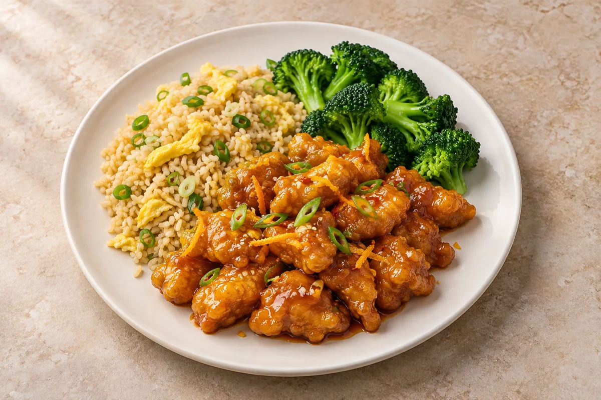

Fakeaway
Panda Express Orange Chicken
Simple creamy Italian comfort food made with butter, milk and Parmesan.
Estimated total: About 45 min totalIncludes the sauce, chicken and egg-fried rice.
Make your original sauce first. Scale it using the sauce ingredients below.
people
Ingredient quantities update automatically

Ingredients
Sauce ingredients
Method
- Make the orange sauce using the scaled sauce ingredients and linked method. Simmer over medium-low heat, stirring, until glossy and thick enough to coat the chicken. Keep warm.
- Beat half the eggs and use enough to coat the diced chicken. Toss the chicken in the cornflour with a pinch of salt.
- Heat most of the oil in a wide frying pan over medium-high heat. Fry the diced, coated chicken in uncrowded batches for about 6–8 minutes per batch, turning, until golden and cooked through. Check a thick piece: the centre must be steaming hot with no pink meat. Adjust the time to the size of the pieces, then set aside.
- While the chicken cooks, steam the broccoli for about 4–5 minutes, until bright green and just tender. Heat the remaining oil in a clean pan over medium-high heat. Stir the remaining beaten eggs for about 1–2 minutes until softly set, then add the cooked rice, sliced spring onions and soy sauce. Stir-fry for about 3–4 minutes, breaking up clumps, until the rice is piping hot throughout.
- Toss the chicken in the hot orange sauce just before serving. Serve with the egg-fried rice and broccoli.
Tips & leftovers
Storage & leftovers
Cool rice as quickly as possible, ideally within 1 hour, and refrigerate in shallow portions. Eat the rice, and any leftovers mixed with it, within 24 hours. Keep other cooked components separate and use within 48 hours. Keep crispy chicken, orange sauce, broccoli and rice separate for better texture. If rice was already reheated, do not heat it again.
Freezing
Freeze suitable cooled components separately for up to 2 months for best quality. If freezing freshly cooked rice, cool it quickly and freeze within 1 hour. Defrost in the fridge and use within 24 hours. The chicken coating softens after freezing; freeze sauce separately. Use freshly cooked rice for portions intended for freezing and reheating.
Reheating
Reheat rice only once until steaming hot throughout and eat immediately. Heat other cooked components thoroughly, keeping cold toppings separate. Heat chicken once on an oven tray until steaming hot, then coat with reheated sauce. If the supplied cooked rice has already been reheated, make fresh rice.
Substitutions
Keep chicken breast as written. Use tenderstem broccoli or small florets. Tamari can replace soy sauce if suitable, checking labels and saltiness.
Keeping leftovers safe
Rice needs faster cooling: cool quickly, ideally within 1 hour, and refrigerate; use within 24 hours. If freezing freshly cooked rice, cool it quickly and freeze within 1 hour. Defrost in the fridge and use within 24 hours. Reheat only once until steaming hot throughout and eat immediately. Do not heat rice again if it was already reheated, including a heated microwave pouch. Keep the fridge at 0–5°C and the freezer around −18°C.
Food-safety guidance: Food Standards Agency: chilling and freezing · reheating leftovers · cooked rice.